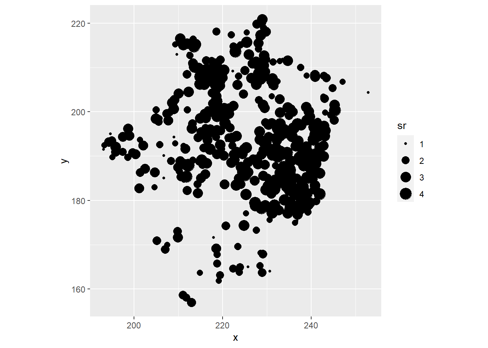
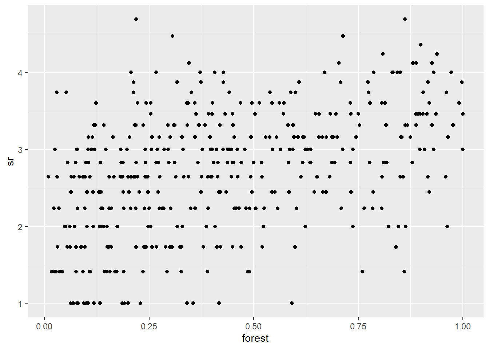
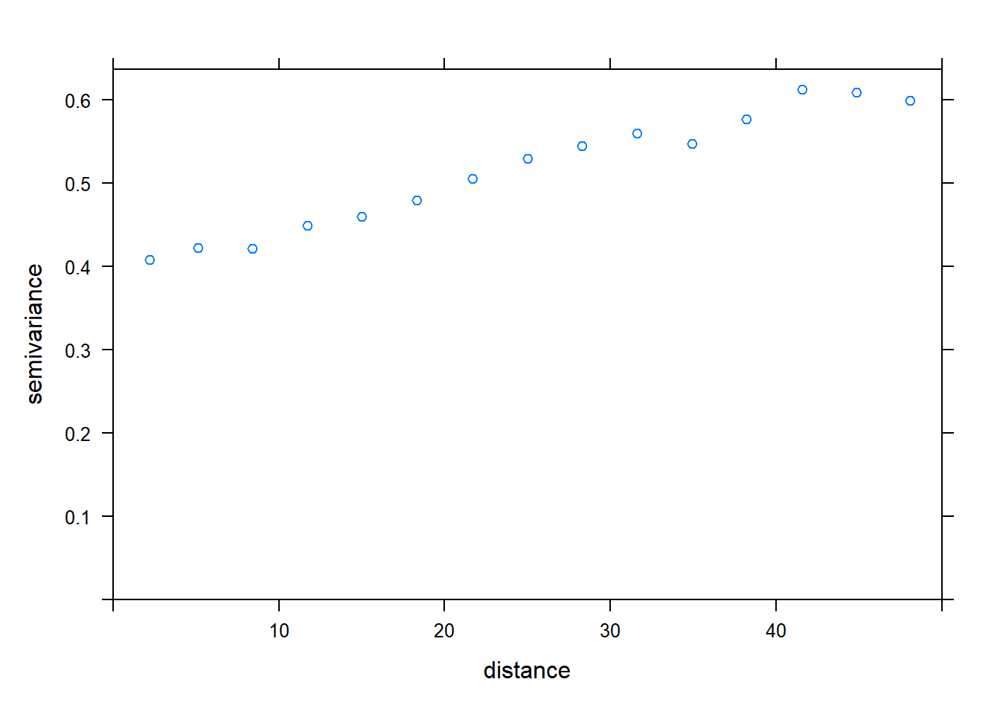

Spatial data
Data
The bryo_belg.csv dataset is adapted from the data of this study:
Neyens, T., Diggle, P.J., Faes, C., Beenaerts, N., Artois, T. et Giorgi, E. (2019) Mapping species richness using opportunistic samples: a case study on ground-floor bryophyte species richness in the Belgian province of Limburg. Scientific Reports 9, 19122. https://doi.org/10.1038/s41598-019-55593-x
This data frame shows the specific richness of ground bryophytes (richness) for different sampling points in the Belgian province of Limburg, with their position (x, y) in km, in addition to information on the proportion of forest (forest) and wetlands (wetland) in a 1 km\(^2\) cell containing the sampling point.
bryo_belg <- read.csv("../donnees/bryo_belg.csv")
head(bryo_belg)## richness forest wetland x y
## 1 9 0.2556721 0.5036614 228.9516 220.8869
## 2 6 0.6449114 0.1172068 227.6714 219.8613
## 3 5 0.5039905 0.6327003 228.8252 220.1073
## 4 3 0.5987329 0.2432942 229.2775 218.9035
## 5 2 0.7600775 0.1163538 209.2435 215.2414
## 6 10 0.6865434 0.0000000 210.4142 216.5579Fitting a geostatistical model
For this exercise, we will use the square root of the specific richness as the response variable. The square root transformation often allows to homogenize the variance of the count data in order to apply a linear regression.
Note: To model the count data directly, for example with a Poisson distribution, and also include spatial dependence, we would need to use a custom likelihood model or a Bayesian model.
- Visualize the spatial pattern of the richness of ground bryophytes (dots of different size according to species richness). Then, visualize the the relationship between richness of ground bryophytes and forest cover. Compute the correlation between these variables.
Solution
bryo_belg$sr <- sqrt(bryo_belg$richness)
library(ggplot2)
ggplot(bryo_belg, aes(x = x, y = y, size = sr)) +
geom_point() +
coord_fixed()
ggplot(bryo_belg, aes(x = forest, y = sr)) +
geom_point()
cor(bryo_belg$sr,bryo_belg$forest)## [1] 0.4483081- Fit a linear model of the transformed species richness to the proportion of forest and wetlands, without taking into account spatial correlations. What is the effect of the two predictors in this model?
Solution
bryo_lm <- lm(sr ~ forest + wetland, data = bryo_belg)
summary(bryo_lm)##
## Call:
## lm(formula = sr ~ forest + wetland, data = bryo_belg)
##
## Residuals:
## Min 1Q Median 3Q Max
## -1.8847 -0.4622 0.0545 0.4974 2.3116
##
## Coefficients:
## Estimate Std. Error t value Pr(>|t|)
## (Intercept) 2.34159 0.08369 27.981 < 2e-16 ***
## forest 1.11883 0.13925 8.034 9.74e-15 ***
## wetland -0.59264 0.17216 -3.442 0.000635 ***
## ---
## Signif. codes: 0 '***' 0.001 '**' 0.01 '*' 0.05 '.' 0.1 ' ' 1
##
## Residual standard error: 0.7095 on 417 degrees of freedom
## Multiple R-squared: 0.2231, Adjusted R-squared: 0.2193
## F-statistic: 59.86 on 2 and 417 DF, p-value: < 2.2e-16There is a positive effect of the fraction of forests and a negative effect of the fraction of wetlands, both significant.
- Calculate the empirical variogram of the model residuals in (b). Does there appear to be a spatial correlation between the points?
Note: The cutoff argument to the variogram function specifies the maximum distance at which the variogram is calculated. You can manually adjust this value to get a good view of the sill.
Solution
library(gstat)
vario <- variogram(sr ~ forest + wetland, locations = ~ x + y, data = bryo_belg,
cutoff = 50)
plot(vario)
Yes, the variance is smaller for short distances and seems to increase up to ~ 40 m
- Try to fit several parametric models to the empirical variogram (exponential, Gaussian, spherical). Which is the selected one? Plot the theoretical model on the plot of the empirical variogram.
vfit <- fit.variogram(vario, vgm(c("Exp", "Gau", "Sph")))
vfit## model psill range
## 1 Nug 0.4083577 0.00000
## 2 Gau 0.1865780 25.19052plot(vario, vfit, col = "black")
- Re-fit the linear model in (b) with the
glsfunction in the nlme package, trying the spatial correlation with the model selected in (d). Compare the models (with and without spatial correlation) with the AIC.
Solution
library(nlme)
mod1e_1 <- gls(sr ~ forest + wetland, data = bryo_belg)
mod1e_Gaus <- gls(sr ~ forest + wetland, data = bryo_belg,
correlation = corGaus(form = ~ x + y, nugget = TRUE))
AIC(mod1e_1,mod1e_Gaus)## df AIC
## mod1e_1 4 917.5085
## mod1e_Gaus 6 870.9592The model including the spatial correlation has the smallest AIC.
- What is the effect of the proportion of forests and wetlands according to the model in (e)? Explain the differences between the conclusions of this model and the model in (b).
Solution
summary(mod1e_Gaus)## Generalized least squares fit by REML
## Model: sr ~ forest + wetland
## Data: bryo_belg
## AIC BIC logLik
## 870.9592 895.1577 -429.4796
##
## Correlation Structure: Gaussian spatial correlation
## Formula: ~x + y
## Parameter estimate(s):
## range nugget
## 14.7381332 0.7409514
##
## Coefficients:
## Value Std.Error t-value p-value
## (Intercept) 2.1279925 0.1758710 12.099734 0.0000
## forest 0.7052987 0.1456888 4.841134 0.0000
## wetland -0.2276565 0.1802216 -1.263203 0.2072
##
## Correlation:
## (Intr) forest
## forest -0.350
## wetland -0.327 0.245
##
## Standardized residuals:
## Min Q1 Med Q3 Max
## -1.9997519 -0.1987275 0.5301851 1.1031378 3.3177771
##
## Residual standard error: 0.7498226
## Degrees of freedom: 420 total; 417 residualThe magnitude of the coefficients is smaller, their standard error is larger, and the effect of wetlands is no longer significant. Because of the spatial correlations, our different points are not independent and part of the effect originally attributed to the predictor variables could be a coincidence due to the spatial correlations of both the response variable and the predictor variables.